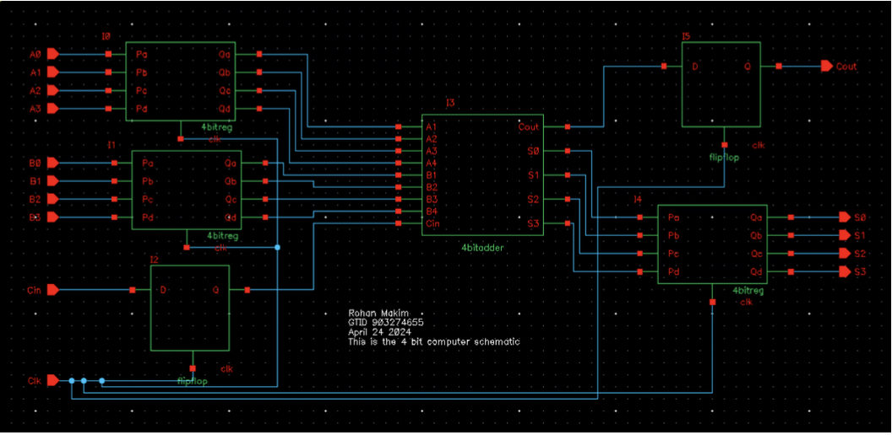
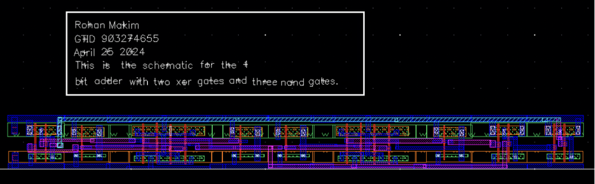

VLSI Logic Design with Cadence
Project Overview
This project focused on the design and layout of CMOS logic circuits using Cadence Virtuoso. The goal was to develop schematics and layouts for key logic blocks, including a 4-bit Ripple Carry Adder, ensuring proper functionality and manufacturability through DRC and LVS verification. Simulations were conducted using Spectre to evaluate timing and delay characteristics.
Schematic Design

- Created transistor-level schematics for fundamental gates: AND, OR, XOR, NAND.
- Built schematic symbols for each gate and validated function using simulation waveforms.
- Designed half-adder and full-adder blocks using hierarchical composition.
- Integrated full-adder blocks into a complete 4-bit Ripple Carry Adder for timing analysis.
Layout Design

- Developed full-custom layouts for all basic logic gates and adder blocks.
- Used standard layer practices (nwell, poly, metal1, diffusion, and contact) while minimizing area and ensuring symmetry.
- Performed cell-level routing, verified connections visually and through layout extraction.
- Completed layout assembly of the 4-bit adder using pre-verified full-adder layouts.
Verification and Simulation
- DRC (Design Rule Check) was run after each layout to catch and resolve spacing, width, and enclosure violations.
- LVS (Layout Versus Schematic) was used to ensure netlist equivalence between schematic and layout.
- Spectre simulations verified logical function of each block with realistic signal inputs and voltage sweeps.
- The 4-bit adder showed consistent behavior across multiple supply voltages; measured propagation delay was ~128 ps worst-case.
Conclusion
This project provided hands-on experience in full-custom digital design, schematic-to-layout workflows, and physical verification using the Cadence suite. It emphasized the importance of accurate schematic capture, hierarchical design, and rigorous layout verification as foundational steps toward VLSI implementation.